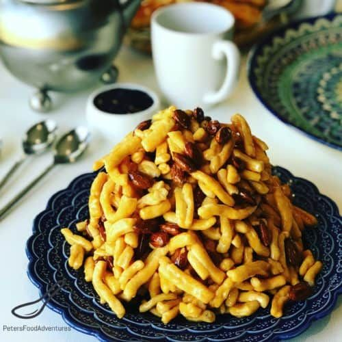

Chak-chak

Chak-chak is a tatar national sweet.
Chak-chak is a popular tatar national sweet. It is made from unleavened
dough cut and rolled into hazelnut-sized balls, which are then deep-fried in oil.
Ingredients:
Noodles:
- Flour - 4 cups
- Eggs - 5
- Milk - 1/2 cup
- Sugar - 1/2tsp
- Vegetable oil
Glaze:
- Honey - 12 ounces
- Sugar - 1/2 cup
Steps:
- Beat eggs just untill well blended. Add 2 teaspoons sugar, salt and milk. Mix thoroughly.
- Add enough flour to make a soft dough.
- Turn out on a floored board. Knead just enough to form a ball.
- Place in a lightly oiled container that has a lid and allow to rest for 1 hour.
- After an hour remove dough and knead slightly. Divide into 2 sections form into round disks for rolling, Place one back into container.
- Roll out the dough to about 1/8 inch. Try to roll into a rectangle instead of a circle.
- When the dough is the right thickness, liberally flour the front and back of the dough. Cut long strips 1-1 1/2 inches wide.
- Flour the front and back of the strips and stack 4 on top of one another.
- Going crosswise, cut through all 4 layers, creating narrow noodles about 1/8 inch wide.
- When you are done cutting, dust with more flour if necessary to keep noodles from sticking.
- Pour enough oil into a pot to make deep frying possible. Bring the oil temperature to about 375 degrees F.
- Shake off excess flour and deep fry in batches, being careful not to overload the pan. Mix slightly to insure all noodles cook evenly. Fry until golden.
- Remove from the oil with a sieve and place on paper towel to absorb any extra oil. Finish deep frying all the noodles.
- Place honey in a saucepan, and over medium heat, bring to just a boil, mixing constantly.
- Add sugar and heat until the mixture comes to a boil and all the sugar crystal have melted.
- Place a third of the fried noodles in a bowl. Pour 1/3 of the honey mixture over the noodles, tossing with a spoon to coat them all.
- Place another third of the noodles in a bowl, and mix with 1/3 of the honey mixture, then finally the rest of the noodles and honey.
- Pour the mixture on your cake dish. Dip your hands in the cold water. Pressing on the noodles firm enough to remove spaces. Form into a hill shape.
- Allow to cool completely.